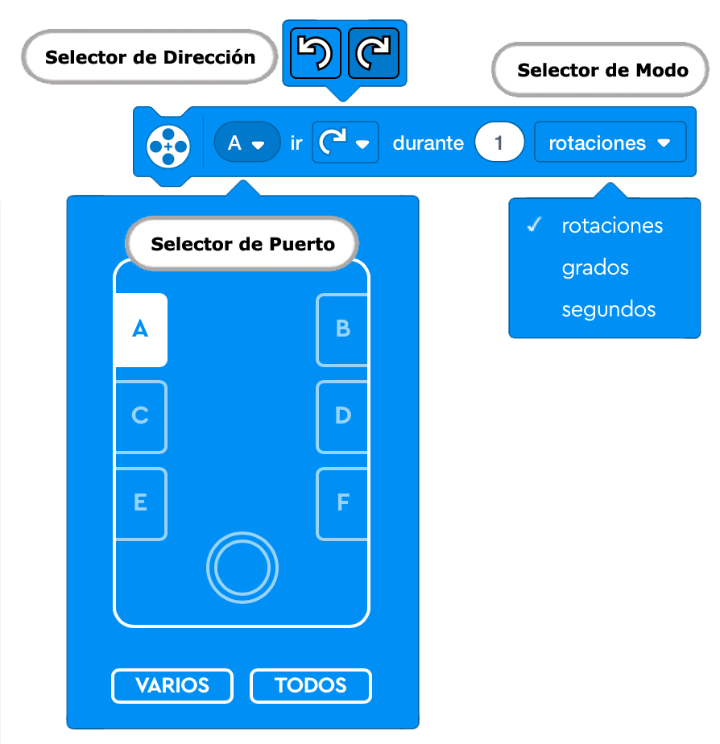
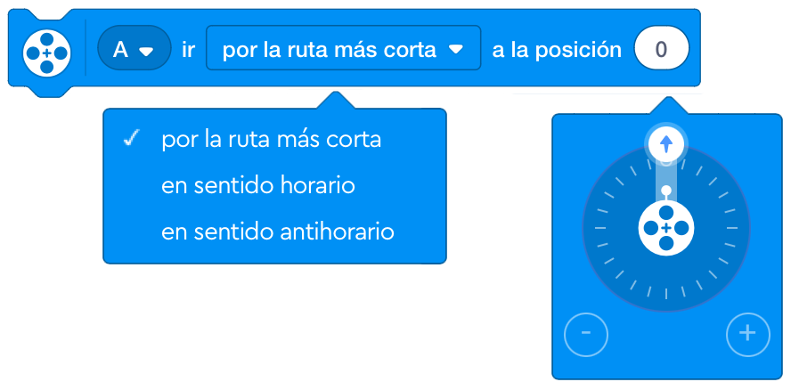
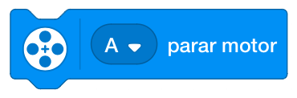

Los bloques de motor hacen que los motores funcionen u obtienen información de los motores. La categoría de bloques de motor contiene los bloques de motor más comunes.
Hace funcionar un motor en sentido horario o antihorario durante un número específico de rotaciones, grados o segundos.

La velocidad del motor se establece mediante el bloque de velocidad establecida. La velocidad
predeterminada es del 75%.
Podemos controlar a que puerto está conectado.

También Podemos controlar la orientación de la rotación del motor.

Y controlar las unidades que le indicamos, que pueden ser rotaciones, grados o segundos.

Lleva al motor a la posición indicada.

Podemos controlar con que puerto irá conectado.
La dirección del sentido de giro también la seleccionaremos.

En el apartado de la posición podrá ir un valor comprendido desde -360 grados hasta 360 grados.
Empieza a hacer funcionar un motor en la dirección indicada a la velocidad establecida de forma permanente hasta que se le indique al motor que haga otra cosa o el programa se detenga.
Establecemos el puerto al que está conectado.
Puede ser en sentido de las aguas del reloj o en sentido contrario de las agujas del reloj.
Detiene el funcionamiento de un motor. El motor frenará para que se detenga rápidamente por completo. El motor no mantendrá su posición una vez que se haya detenido.
Establecemos el puerto al que está conectado el motor que queremos parar.
Establece la velocidad del motor indicado.

Le indicamos el puerto al que está conectado el motor.
El rango de velocidad es de -100 a 100. Los valores negativos invertirán la dirección del motor. Si no se ha
especificado la velocidad, el valor predeterminado es 75%.

Podemos saber en que posición se encuentra un motor y si es necesario guardarla en una variable.

Seleccionaremos en que puerto se encuentra dicho motor.
Podemos ver la velocidad de un motor y si es necesario almacenarlo en una variable.

Indicaremos en que puerto se encuentra dicho motor.